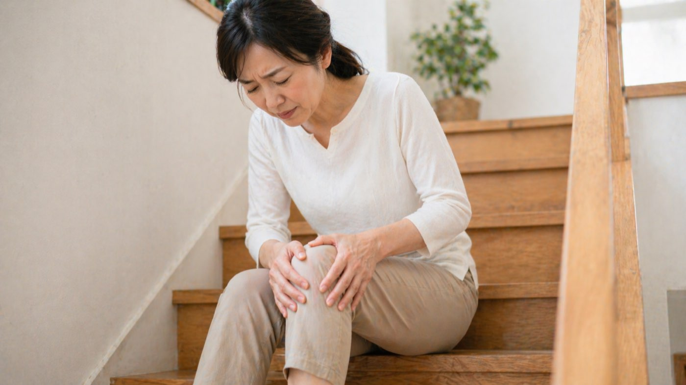

「病院でヒアルロン酸を打ってもらっているが、効いている感じがしない」
「膝を治したいけど、手術は避けたい」
「湿布や痛み止めでしのいでいるが、根本的に改善したい」
このようなご相談をいただくことがあります。
膝の痛みは、膝そのものだけの問題ではないことがほとんどです。股関節・足首・骨盤のアンバランス、大腿四頭筋やハムストリングスの硬さ、歩き方や重心のクセ——こうした全身のつながりが膝に負担をかけ続けていることが多くあります。
変形性膝関節症・半月板損傷・鵞足炎・腸脛靭帯炎・膝蓋腱炎など、膝の痛みの原因はさまざまです。重要なのは「どこが炎症しているか」だけでなく、「なぜそこに負担がかかり続けているか」を見ることです。
股関節や足首の可動域が低下すると、その分の負担が膝関節に集中します。「膝だけ」ではなく、上下のつながりを見ることが大切です。
O脚・X脚・内股・がに股など、体の使い方のパターンが膝の特定の部位に繰り返し負担をかけていることがあります。
大腿四頭筋・ハムストリングス・臀筋群の筋力が落ちると、膝関節を支える力が弱まります。運動療法でここを底上げすることが、再発防止に直結します。
慢性的な炎症や関節周囲の血流低下は、組織の回復を妨げます。鍼灸によって局所の血流を促し、回復しやすい環境をつくります。
東洋医学の視点では、膝の痛みは「肝・腎」の気血の巡りと深く関係すると考えます。局所の炎症だけでなく、体全体の回復力・水分代謝・筋肉の滋養といった観点からもアプローチします。
階段の上り下りが楽になってくる
正座・しゃがみ込みの可動域が広がる
歩いても痛みが出にくくなる
膝の腫れ・こわばりが落ち着いてくる
好きな運動・外出を無理なく再開できる
注射・薬への依存度を下げていける
膝の状態や年齢・生活習慣によって回復のスピードは異なります。1回で劇的に変わるというより、体が負担をかけにくい方向へ少しずつ整っていくイメージです。継続することで、膝を支える体づくりが積み上がっていきます。
膝の状態だけでなく、股関節・足首・骨盤・歩き方・生活習慣・運動歴まで丁寧にうかがいます。「病院では異常なしと言われたが膝が痛い」「手術を勧められたが、まず保存療法を試したい」そのような方もお気軽にご相談ください。
Evidence
膝の痛みに対する鍼灸の効果については、国際的な学術誌で複数の研究が報告されています。鍼灸だけで変形を元に戻すことはできませんが、痛みの軽減や動きやすさの改善に役立つ可能性が示されています。運動療法や生活習慣の見直しと組み合わせることが大切です。
Cochrane Database of Systematic Reviews, 2010
変形性関節症（膝を中心）に対する鍼治療について、多数のRCTを解析した格式高い系統的レビュー。8週後・26週後に痛みと身体機能の改善が示されました。偽鍼との差は小さく、効果の一部には皮膚刺激や治療環境も関与すると考察されています。
Manheimer E, et al. Acupuncture for peripheral joint osteoarthritis.
論文を読む（PubMed）→The Lancet, 2005
膝OA患者を対象に、鍼・最小限の鍼・鍼なしを比較した大規模RCT。8週後には鍼群で痛みと関節機能がより改善しました。短期的に痛みを下げて動きやすい状態を作り、その間に筋力や歩き方、体重管理を整える使い方が現実的です。
Witt CM, et al. Acupuncture in patients with osteoarthritis of the knee: a randomised trial.
論文を読む（PubMed）→Annals of Internal Medicine, 2004
570名の膝OA患者を対象にした有名なRCT。通常ケアに鍼を追加した群で、痛みや身体機能に有意な改善が認められました。鍼単独ではなく、通常治療や運動指導と組み合わせる補助療法として位置づける根拠になる研究です。
Berman BM, et al. Effectiveness of acupuncture as adjunctive therapy in osteoarthritis of the knee: a randomized, controlled trial.
論文を読む（PubMed）→JAMA Internal Medicine, 2012
29件のRCT・約17,922名の個別患者データを統合した大規模メタ解析。変形性関節症・腰背部痛・頚部痛・慢性頭痛を対象に、鍼は偽鍼および鍼なし対照と比較して有意に痛みを軽減すると報告されています。
Vickers AJ, et al. Acupuncture for chronic pain: individual patient data meta-analysis.
論文を読む（PubMed）→※ 掲載論文はすべて第三者機関の学術誌に掲載されたものです。効果には個人差があります。当院では鍼灸に加え、運動指導や生活習慣の見直しを組み合わせて対応しています。
関節の変形そのものを元に戻すことはできませんが、周辺の筋肉・姿勢・歩き方を整えることで、痛みを軽減できる余地は大きいです。手術を避けたい方にもご相談いただいています。
まず整形外科で確認をおすすめします。炎症が落ち着いた段階で、鍼灸を併用される方が多くいらっしゃいます。
はい、可能です。負担をかけすぎない範囲で整えますのでご安心ください。ご来院時の移動が難しい場合はご相談ください。
多くの方が競技を続けながら通っています。試合や練習の時期に合わせて施術のペースを調整します。
「注射を打ち続けるだけでいいのか」と感じている
膝の根本的な原因を探りたい
手術を避けて、自分の体で動けるようになりたい
膝の痛みは、年齢のせいだけではありません。
体の使い方・筋力・全身のバランスを整えることで、
多くの方が「また動ける」実感を取り戻しています。
一度、体全体のつながりから膝の状態を確認してみませんか。
今西健はり・灸院 大阪府八尾市堤町2-30-59
LINE ID: takeshityan